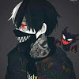

Meu nome é João Pedro.
Tenho atualmente 14 anos.
Começei a participar do github para aprender sobre como contribuir com outros projetos.
Estou no sétimo ano
Eu tenho um canal no Youtube : Meu Canal
--------------------------
O que eu entendi do RPG Ordem Paranormal
Ordem Paranormal é uma campanha de RPG que foi mestrada pelo Rafael Lange (Cellbit), que começou com o nome da temporada como "Ordem Paranormal : O RPG".
A proxima temporada foi nomeada de "Ordem Paranormal : O segredo na floresta". No final da temporada os playes tiveram que enfrentar um boss "O Deus Da Morte", que foi morto pelas bombas acionadas pelo Thiago Friz, matando o Deus Da Morte, e se sacrificando.
"Ordem Paranormal : Desconjuração", a temporada mais discutida e misteriosa. Kian, o lider dos Escripitas, um "grupo" de pessoas com o desejo de acabar com o paranormal. Kian foi revelado no final, como um "Deus" do conhecimento, revelando seu plano, e como acabar com o paranormal. Como acabar com o paranormal? Simples, só matar todos que sabem do paranormal.